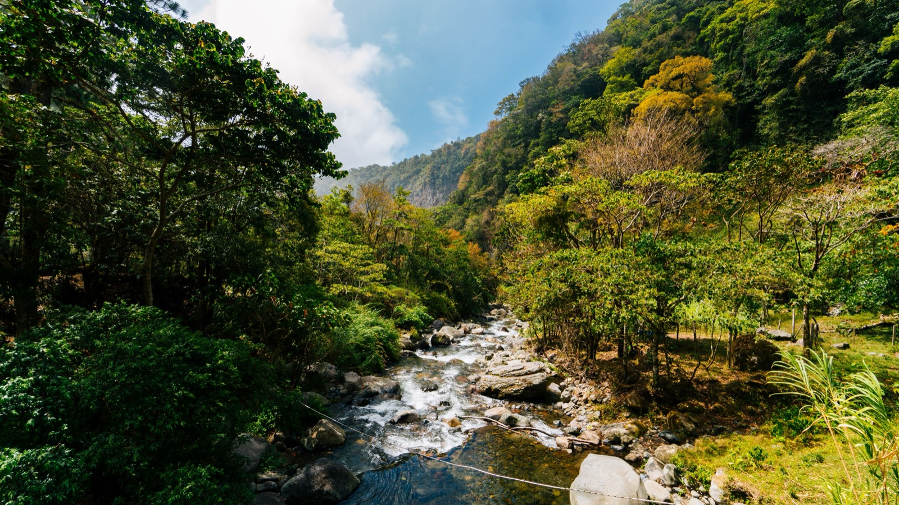
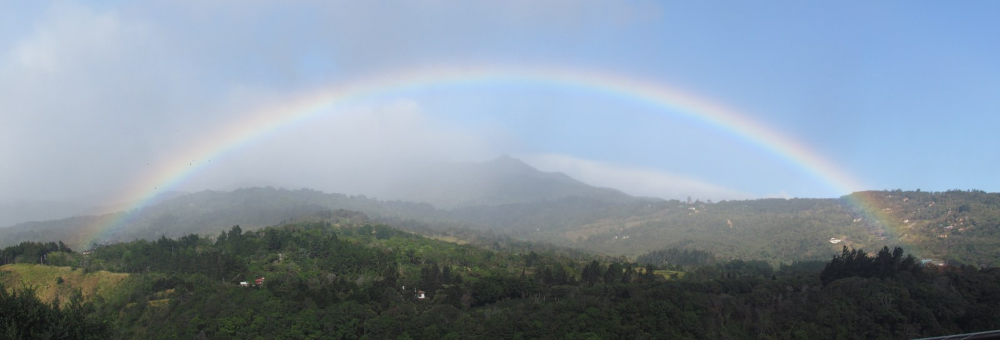

Boquete, Panama Real Estate
What property actually costs here in 2026, neighbourhood by neighbourhood, and the two things that separate buyers who do well from buyers who lose money.
Boquete is the most searched property market in Panama and the least well documented. Asking prices are everywhere. Closed prices are almost nowhere. This page gives you the bands we actually see, what drives the five-fold spread between neighbourhoods that sit fifteen minutes apart, and the ownership question that decides whether your purchase is an asset or a liability.
At a glance
- Median property price is around $265,000, with built area trading at roughly $3,800 to $4,600 per square metre depending on location and age.
- Land is where the spread lives. Raw parcels in Alto Jaramillo run near $25 per square metre. Road-front lots in Volcancito reach $120 to $150. That is a five-fold difference inside a fifteen minute drive.
- Asking is not closing. A negotiation discount of around 8% is normal, and wider in the slow segments.
- Property tax is low, roughly 0.6% to 0.8% a year, and there is no capital gains tax on appreciation for most sellers.
- Liquidity is thin. Around 340 to 380 transactions a year against 12,400 registered properties. Budget six to twelve months to sell.
- Building often beats buying at $80 to $140 per square foot, and you choose the lot rather than inheriting someone else's compromise.

What property costs in 2026
Boquete trades at a premium to the rest of Panama and a discount to the capital. Built area here averages around $4,200 per square metre against roughly $1,850 in Panama City and about $1,250 nationally. That sounds backwards until you understand what the figure measures: it reflects expat-oriented listings with imported finishes, not typical Panamanian construction. A local house built to local standards does not trade at that number.
| Metric, Q1 2026 | Figure |
|---|---|
| Median property price | $265,000 |
| Price per m², built area | $3,800 to $4,600 |
| Registered properties | 12,400 |
| Transactions per year | 340 to 380 |
| Furnished rental, median | $1,200 to $1,600/mo |
| Gross yield on furnished | 5% to 7% |
| Annual appreciation | 6% to 8% |
Read the transaction number carefully. Around 360 sales a year across 12,400 properties means roughly 3% of the market turns over annually. That is a thin market, and it cuts both ways: little downward pressure on prices, and a long wait when you want out.

The five neighbourhoods
Elevation, view corridor and road surface explain almost all of the price difference here. Not square metres.
| Area | Character | Land, per m² | 3-bed house |
|---|---|---|---|
| Alto Boquete | Lower, warmer, flatter, closest to services | $40 to $80 | $280,000 to $380,000 |
| Bajo Boquete | The town centre, walkable, most rental demand | $60 to $110 | $260,000 to $400,000 |
| Jaramillo | Higher, cooler, mostly land and fincas | $25 to $60 | $300,000 to $450,000 |
| Volcancito | Premium view corridor, paved access | $120 to $150 | $450,000 to $700,000 |
| Palmira | Quiet, mixed local and foreign, good value | $35 to $70 | $240,000 to $360,000 |
Real listings from the current market show the spread plainly. A 9,903 m² estate parcel in Alto Jaramillo has been offered at $250,000, which is roughly $25 per square metre. A 2,600 m² lot in Volcancito with mountain views sits at $312,000, or about $120. Same district, same drive time to the same supermarket, five times the land price.
What you are paying for is the view corridor and the road. A parcel on a paved road with an unobstructed line to Volcán Barú commands multiples of an identical parcel behind a ridge on stone. Before you fall in love with a price per square metre, drive the access road in the rain.

Why the listing portals mislead
Almost every number you will find for Boquete is an asking price scraped from a portal. Three things follow from that, and they all cost buyers money.
Asking is roughly 8% above closing. That is the standard adjustment applied by people who model this market seriously, and it is wider in the slower segments. If you are budgeting from listings, you are budgeting high, which is the safer direction but distorts what you think you can afford.
Listings go stale and stay up. In a market doing 360 transactions a year, a portal showing 184 active listings is showing you roughly six months of supply. Some of it sold months ago. Some of it has been listed at the same price for two years, which tells you the price is wrong.
Square-metre figures mix built and total area. A listing quoting "$389 per m²" on a villa is quoting built area. A listing quoting "$25 per m²" on a finca is quoting land. Comparing them tells you nothing. Always ask which number you are being shown.
The tax exemption nobody mentions
Panama grants construction tax exemptions that run with the property, not the owner. A Volcancito listing currently on the market carries an exemption through 2029.
That is real money in the first years of ownership and it is almost never in the headline price. Ask for the exemption certificate and its expiry date on every property you consider. Two otherwise identical houses can differ by several thousand dollars a year on this alone.

Titled land versus Rights of Possession
This is the single most expensive thing to get wrong in Chiriquí, and it is why some parcels look impossibly cheap.
| Titled | Rights of Possession | |
|---|---|---|
| What you own | The land, registered at the Registro Público | A recognised right to occupy, not ownership |
| Can it be mortgaged | Yes | No |
| Can it be insured | Yes | Rarely, and never well |
| Can a foreigner hold it | Yes, outright | Legally murky, and contested in practice |
| Resale market | Full | Cash buyers only |
| Typical price | Market | 30% to 60% below |
Rights of Possession, or derecho posesorio, is common in rural Chiriquí and it exists for sound historical reasons. It is not a scam. But it is not ownership, and a foreign buyer holding ROP has bought a position that cannot be financed, is difficult to insure, and can only be sold to someone else willing to accept the same limitation.
Verify title at the Registro Público before any money moves. Not the seller's copy of a document, the registry itself. Your attorney does this in a day. If a price is far below the bands above, this is almost always why.
What a foreigner may own
More than most people expect. Panama places few restrictions on foreign ownership and no residency requirement attaches to buying.
- Titled property, outright and in your own name. No local partner, no corporate structure required, though many buyers use a Panamanian corporation or private interest foundation for estate planning reasons.
- The same rights as a Panamanian with respect to titled land, including the right to sell, lease, mortgage and bequeath.
- One real restriction: land within 10 kilometres of an international border, and certain island and coastal concession zones. Neither applies in Boquete.
Buying property does not grant residency. It can support a residency application, which is a different thing and covered in our investor visa guide.
Closing costs and timeline
| Item | Who pays | Amount |
|---|---|---|
| Transfer tax | Seller | 2% of value |
| Capital gains advance | Seller | 3% of price, creditable |
| Attorney fees | Buyer | 1% to 1.5% |
| Registry and notary | Buyer | $500 to $1,500 |
| Title search | Buyer | $150 to $400 |
| Annual property tax | Owner | 0.6% to 0.8% |
Budget 2% to 3% of the purchase price in buyer-side costs. A typical Boquete purchase closes in 30 to 60 days once the promise of sale is signed, longer if title needs cleaning up or if the seller is offshore.
Note the property tax line. On a $265,000 home registered as a primary residence, the first $120,000 of registered value is exempt, which brings the annual bill to roughly $700. That is a fraction of the equivalent in most of the United States and it is one of the genuine advantages of the market.
Buying against building
Most people arrive intending to buy and a meaningful number end up building. The arithmetic explains why.
Building in Chiriquí runs $80 to $140 per square foot for good work, which is roughly $860 to $1,500 per square metre. Against a market trading at $3,800 to $4,600 per square metre of built area, new construction on a well-chosen lot is frequently cheaper than buying finished, even after you add the land.
The trade is time and attention. A build runs 12 to 20 months from design to keys and requires you to be present or well represented. Buying is faster and you inherit someone else's decisions about orientation, ceiling height, insulation and where the afternoon sun lands.
The honest rule: if you have found a house you genuinely like, buy it. If you are compromising on three or more things, price the build. Our 2026 cost to build breakdown has the line items, and buying land as a foreigner covers the due diligence.
The lot matters more than the house.
Almost every regret we hear in Boquete traces back to the parcel rather than the building. Wrong side of the ridge, afternoon sun in the wrong window, an access road that becomes a river in October. We build fixed-price homes across Chiriquí and will walk a lot with you before you buy it, whether or not you build with us.
Sources and how to read these numbers
Verified 14 August 2026. Every figure here is a range because Boquete is a thin market and single sales move averages badly.
- Market metrics including median price, transaction volume and price per m² come from Panama market analyses published in 2026 and cross-checked against current listings.
- Neighbourhood bands are drawn from active listings across the major Chiriquí agencies, adjusted downward for the negotiation gap described above.
- Title status must be confirmed at the Registro Público de Panamá. This is the one item never to take on trust.
- Property tax bands and the primary residence exemption are published by the Dirección General de Ingresos.
- Residency rules, including whether a purchase can support an application, come from Servicio Nacional de Migración.
- Build costs are our own 2026 project data from Chiriquí and the Azuero peninsula.
The caveat worth repeating: most published Boquete pricing is asking price, not closed price, and the two differ by roughly 8%. Anyone quoting you a single confident number for what property costs in Boquete is quoting you a listing average, which is a different thing.